MENU >> Artwork >> The biggest selection of Sonic artwork! >>Box Artwork - Official Artwork - Game Sprites - Animated Sprites - Game Screenshots - Album Artwork |
If particular sprites have been created by someone, before you place them on your site you must get permission from them first, either via Dreadknux by contacting him below using the form or e-mail address, or by contacting them directly.
Aswell as all the usual sprites, Roareye has not only submitted Sonic Adventure sprites that he has found on the Internet, but he has also created some Sonic Adventure 2 Shadow sprites. Top man!
The following Sonic Adventure 2 Sprites were created by Roareye:
Some normal standard Sonic sprites, taken by the Dreadknuxster himself. Take them if you REALLY want, they're there for display. If you want to send some sprites in, do so by mailing me.Game Sprites
News
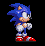
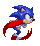


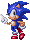


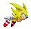

 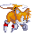
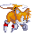


 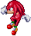
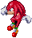

Sonic Adventure/SA2 Sprites
The following Sonic Adventure sprites were submitted by Roareye:
 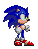
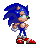
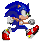
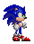
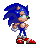
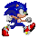
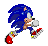
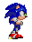


 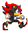
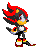
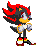
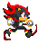
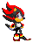
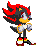
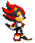
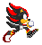
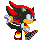
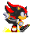
*Send in any Sonic Sprites, animated or otherwise to Dreadknux!*
dreadknux@knuckles.co.uk
Fill in the form!